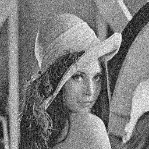
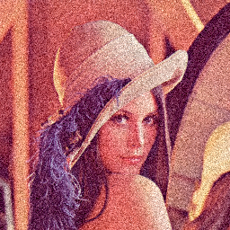
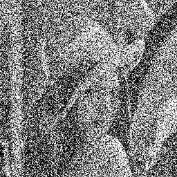
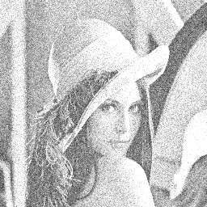
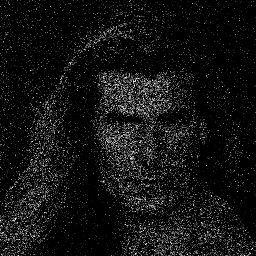
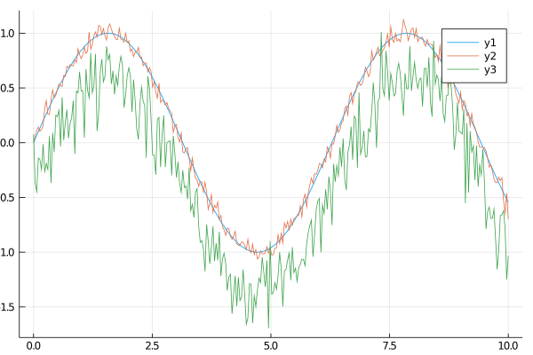

Additive White Gaussian
Additive white Gaussian noise is one of the most common types of noise. We simply add a random number to each pixel. The random number has a mean $\mu$ of zero and a certain standard deviation $\sigma$.
Usage
Arrays, Grayscale Images and RGB Images
For arrays, grayscale images (Array{<:Gray}) and RGB images (Array{<:RGB}) we provide the following method:
additive_white_gaussian(X; clip=false[, σ=0.1, μ=0.0])This methods adds a random Gaussian value to each individual element of the array. In the case of RGB images, this means that every colorchannel of one pixel receives a different amount of noise. The array X must be provided, clip is a keyword argument. If clip=true the values will be clipped to the interval [0,1]. $\sigma$ and $\mu$ represent the standard deviation and the mean of the gaussian noise respectively. If $\mu$ is unequal to 0, we increase the overall intensity of an image. $\sigma$ represents how strong the noise is, alreay a value of $\sigma=0.5$ introduces a lot of noise. If the stored numbers of the array are somehow a subtype of Normed we automatically clip them. This is quite common if you use the Images library which uses by default a type Array{Gray{Normed{UInt8, 8}}}. For Float arrays we don't clip any values, this should be preferably used for any use case outside of images.
RGB images each Channel the same
For RGB images (Array{<:RGB}) we also provide the following:
additive_white_gaussian_chn(X; clip=false[, σ=0.1, μ=0.0])This method, in contradiction to the previous one, adds the same noise value to all color channels of one pixel.
Examples
Images
Here some examples with images.
using Noise, TestImages, Images
img_gray = testimage("lena_gray_256")
img_color = testimage("lena_color_256")
img_float = convert(Array{Gray{Float64}}, img_gray)
img_gray_noise = additive_white_gaussian(img_gray)
# the following call sets the standard deviation and the mean manually
img_color_noise = additive_white_gaussian(img_color, 0.1, 0.0)
# since mean is by default 0.0 we can leave it out
img_color_channel_noise = additive_white_gaussian_chn(img_color, 0.1)
img_gray_noise_heavy = additive_white_gaussian(img_gray, 0.5)
img_gray_noise_intensity = additive_white_gaussian(img_gray, 0.1, 0.3)
# without clip the intensity can be above 1.0 as well
# however, we can only save (see below) a image with intensities [0, 1]
img_float_noise = additive_white_gaussian(img_float, 0.3, -0.6, clip=true)The images are in the same order as the commands are. The middle image has applied noise to each color channel individually, in the right the same noise is added to all channels of a pixel. Therefore the midle image has a color noise, the noise in the image in the right corresponds to some intensity noise.
| Grayscale image noise | All channels of a pixel have different noise | All channels of a pixel have the same noise |
|---|---|---|
|  |  |
| Gray image with heavy noise | Gray image intensity gain noise | Float Image with intensity reducing noise |
|---|---|---|
|  |  |  |
1D Arrays
Some examples with 1D arrays.
using Noise, Plots
x = LinRange(0.0, 10.0, 300)
y = sin.(x)
# small noise
y_noise = additive_white_gaussian(y, 0.05)
# heavy noise and mean shift
y_noise_2 = additive_white_gaussian(y, 0.2, -0.4)
plot(x,y);
plot!(x, y_noise);
plot!(x, y_noise_2);/home/travis/.julia/packages/GR/yMV3y/src/../deps/gr/bin/gksqt: error while loading shared libraries: libQt5Widgets.so.5: cannot open shared object file: No such file or directory
connect: Connection refused
GKS: can't connect to GKS socket application
GKS: Open failed in routine OPEN_WS
GKS: GKS not in proper state. GKS must be either in the state WSOP or WSAC in routine ACTIVATE_WSAs you can see we are able to introduce white gaussian noise the same way to 1D arrays. The green curved is shifted downwards because of the negative $\mu$. 